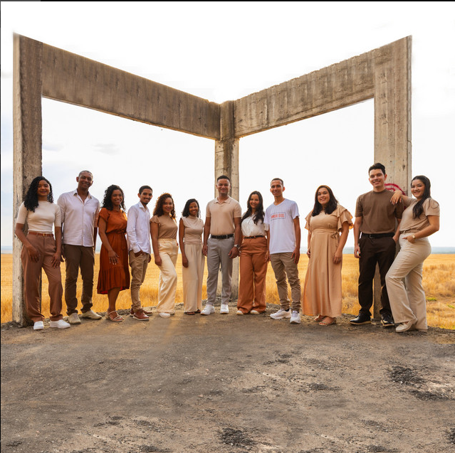

Nossa história
Quem Somos
O Ministério Nova Página é um grupo musical gospel de Sorriso, Mato Grosso, ligado à Igreja Adventista do Sétimo Dia Central. Formado por jovens, nasceu em 2025 do desejo de ir além das apresentações nas igrejas e de levar a mensagem cristã, por meio da música, a públicos e comunidades diferentes.
O Significado do Nome
“Nova Página” fala de recomeço. Muitos integrantes já haviam caminhado juntos em projetos musicais anteriores e decidiram iniciar, juntos, uma nova etapa. O nome também resume a mensagem que o grupo leva: em Cristo, toda vida pode ter uma nova página.
A mensagem central do grupo é a volta de Jesus e o chamado a uma nova vida com Ele.
Cada canção nasce desse propósito: honrar e glorificar o nome de Deus e alcançar todo tipo de público, com atenção especial aos jovens da geração atual.
Unidos por uma só missão
O grupo reúne jovens de várias igrejas adventistas de Sorriso. Cada um vem de uma igreja e de uma origem diferente, com sua própria história de amor pela música e por Deus. A base são 12 vozes, número ideal por naipe. O que une todos não é o lugar de onde vieram, mas o propósito que os trouxe até aqui.
Davi Francisco
À frente do ministério está Davi Francisco, que atua há mais de 15 anos na liderança e na direção de grupos musicais. Foi ele quem reuniu os integrantes para a criação do Nova Página. Acompanha cada jovem de perto, inclusive na vida cristã, e tem o dom de unir vozes e pessoas em torno de um mesmo objetivo.
Em pouco tempo, o grupo levou sua música a diferentes cidades, foi convidado a se apresentar na Câmara Municipal de Sorriso e participou do Natal Luz. Gravou suas músicas em estúdio, chegou às principais plataformas digitais e lançou seu primeiro clipe.
O Nova Página olha para frente com a certeza de que ainda há muitas páginas a escrever. O grupo deseja levar sua mensagem a mais lugares, a mais igrejas e a mais jovens, e seguir publicando novos trabalhos musicais que cheguem a quem ainda não ouviu falar de esperança. Cada canção é um convite: que mais pessoas conheçam a Cristo e encontrem n’Ele um novo começo.
Mais que um grupo musical, o Nova Página é um ministério de jovens unidos pelo mesmo propósito. Seguem cantando a esperança da volta de Jesus, e
a história continua sendo escrita.